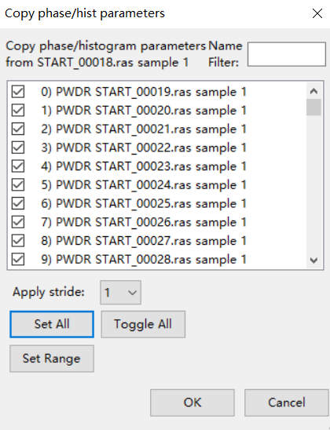

GSASII拟合原位XRD数据（1）：单相连续拟合
前言
该教程示范了用GSAS ii 做连续拟合的步骤，旨在快速地处理原位XRD的数据及减少重复操作。该方法能较快得到晶胞参数的变化，但会损失一些精度，对精度要求高者建议还是每个数据单独修。
该教程使用的数据集来自YTT，对于材料为LiNiO2, 空间群 ‘R -3 m’ 。
推荐阅读GSAS ii 官方教程（英文）：Sequential refinement of multiple datasets – CuCr2O4 from 7K to 300K
一， 数据准备
双击打开GSAS ii, 点击 ‘import-PD-你的数据类型’ 导入全部原位XRD数据：
点击 ‘import-Phase-from CIF file’ 导入cif晶体结构:
将cif晶体结构和首个原位数据关联:
二， 拟合第一个XRD数据
该步骤请参考之前的文章：
GSAS ii 单相拟合
三， 连续拟合前的准备
1. refine框设置
取消 ‘SP-H scale’ 以外所有refine框的勾选
zoom in.
新增勾选 ‘Phase-Data-Hydrostatic/elastic strain-D11& D33’
2. 扩大应用相的XRD数据范围
Phase1——Edit phases——Add powder histograms——set all——OK
3. 参数复制
将首个数据拟合的参数赋予全部数据：进入首个数据——Commands——Copy params——OK——set all——OK
将待拟合相赋予全部数据：进入Phase1——Edit phase——Copy data——set all——OK

4. 连续拟合的条件设置
选择应用的XRD数据范围：Controls——Select datasets——set all——OK
勾选 ‘Copy results to next histogram?’ 这样在修新的一个XRD数据的时候会沿用上一个的结果
四，开始连续拟合及结果分析
点击：Calculate——Sequential Refine
自动连续拟合开始：
结果在左侧列表最下面的‘Sequential results’

点击可见：
点击数据的任意列，会有对应的参数变化曲线生成（带有误差棒）：
导出结果为excel：
之后可在其他软件进行绘图。 单相连续拟合finished！